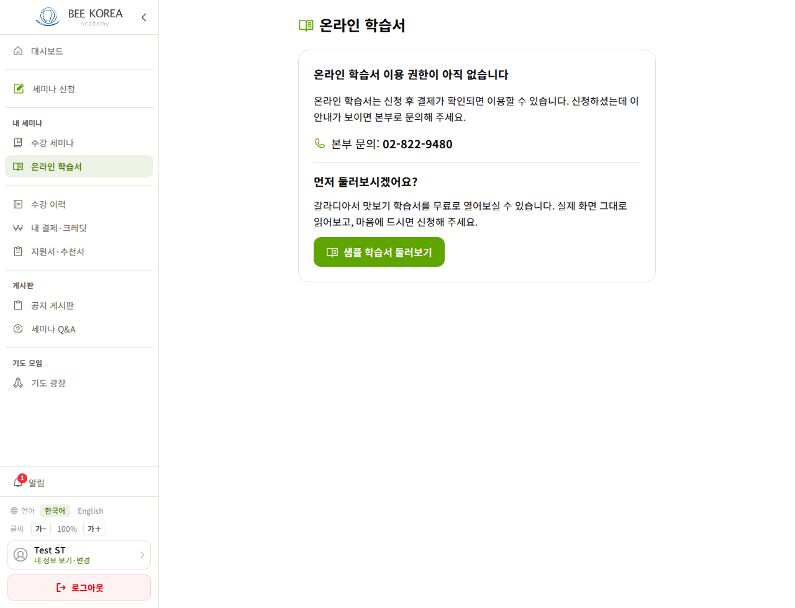
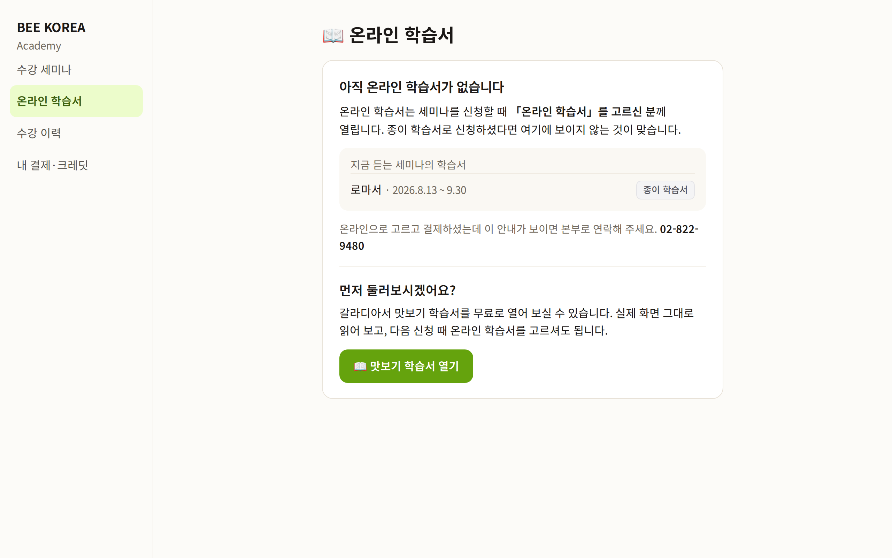
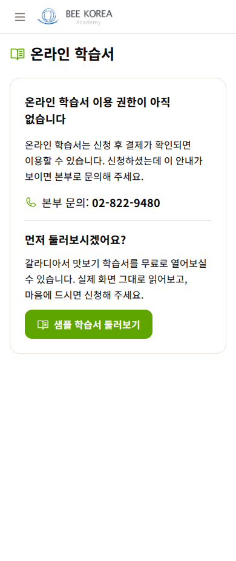
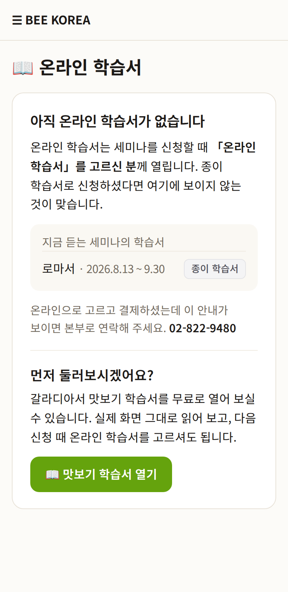

LMS 온라인 학습서 — 디자인 시안 1차
2026-10-12 · 학생 대부분이 보는 「아직 없음」 화면 · 시험용 학생 계정(로마서 수강 중) · 아직 적용 전
왜 이 화면인가 — 실측
- 지금 반을 듣는 학생 563명 중 537명(95%)이 「온라인 학습서 이용 권한이 아직 없습니다」를 봅니다(연결 26명).
- 규정상 맞는 화면입니다 — 온라인 학습서는 신청 때 「온라인 학습서」를 고른 사람만 엽니다(mmv2 POLICY §11-6-4). 지금 반 신청 710건 중 온라인 12 · 종이 103 · 고르는 칸이 생기기 전 신청 595.
- 문제는 글입니다 — 「신청 후 결제가 확인되면 이용할 수 있습니다. 신청하셨는데 이 안내가 보이면 본부로 문의」는, 이미 신청·결제한 학생에게 「뭔가 잘못됐다」로 읽혀 본부로 전화하게 만듭니다.
무엇이 바뀌나
- 제목 「이용 권한이 아직 없습니다」 → 「아직 온라인 학습서가 없습니다」
- 이유를 그대로: 「신청할 때 온라인을 고르신 분께 열립니다. 종이 학습서로 신청하셨다면 여기에 보이지 않는 것이 맞습니다」
- 「지금 듣는 세미나의 학습서」 한 줄 — 내가 종이로 신청했는지 바로 보입니다(서버가 신청 기록에서 읽음)
- 본부 문의는 온라인으로 고르고 결제했는데 안 보일 때만 · 맛보기는 「다음 신청 때 온라인을 고르셔도 됩니다」로 이어 줌
- 책이 있는 학생(목록 화면)·인도자 안내는 그대로(9/14 · 8/26 결정)
PC


휴대폰


정해 주실 것
- 문구 — 「종이 학습서로 신청하셨다면 여기에 보이지 않는 것이 맞습니다」로 바꿔도 될까요? (추천)
- 「지금 듣는 세미나의 학습서 — 종이/온라인」 한 줄을 붙일까요? 서버가 신청 기록에서 읽습니다. 고르는 칸이 생기기 전 신청(595건)은 「종이 학습서」로 표시합니다(그때는 종이뿐이었습니다). (추천)